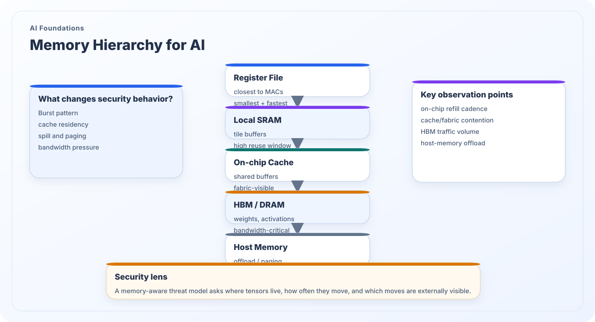

Memory Hierarchy for AI
AI performance and AI security are both shaped by where tensors live and how often they move. Registers, SRAM, on-chip caches, HBM or DRAM, and host memory do not merely differ in speed; they define observability, contention, spill behavior, and trust boundaries.
What this topic covers
Modern AI execution spans several memory tiers. Small local structures near compute provide low latency and high reuse, while larger off-chip tiers hold model weights, activations, KV-cache state, and intermediate tensors that cannot stay close to the compute array. The entire stack tries to maximize reuse near the compute blocks and minimize expensive movement.
From a security perspective, memory movement is often more revealing than arithmetic itself. Cache residency, burst length, reuse distance, bank conflicts, bandwidth saturation, paging, and host-device copies can expose model structure, sequence length, batch size, runtime phase, or multi-tenant interference. A memory-aware threat model is therefore central to hardware-aware AI security.
Security significance
- Data movement often dominates energy and latency, making it a natural measurement surface.
- Spill behavior and cache pressure can expose model size, sequence length, and execution phase.
- HBM, DRAM, and host-memory transfers broaden the attack surface beyond on-chip arithmetic.
- Understanding memory tiers is essential for both performance analysis and leakage interpretation.

Key memory tiers
Each tier contributes differently to throughput, latency hiding, and the visibility of an AI workload.
Registers and local SRAM
These structures sit closest to the MAC or tensor units and support tile-level reuse. They are difficult to observe directly from software, but their occupancy and refill behavior strongly influence cycle-level timing.
On-chip cache and shared fabric buffers
Caches and shared buffers mediate access among compute engines, DMA, and coherence or fabric logic. They create contention points where co-scheduled tasks or tenants can indirectly influence one another.
HBM, DRAM, and host memory
Large memory tiers hold bulk model state and overflow tensors. They often dominate off-chip bandwidth, reveal burst structure, and become visible to system software, memory controllers, or interconnect monitors.
Memory-centric security observations
A good AI threat model should be able to explain what memory effects an attacker might observe or manipulate.
Leakage through movement
Repeated transfers can reveal prompt length, batch size, sequence growth, or operator mix. Even when arithmetic stays constant, the movement profile may change enough to identify the workload phase.
Faults through stress and placement
Timing stress, row disturbances, buffer corruption, or voltage faults can have very different impact depending on whether the target state resides in SRAM, cache, HBM, or host memory.
Isolation through residency control
Defensive design must consider buffer ownership, zeroization, memory partitioning, cache flushing, and what happens when unsupported operators force data into new memory domains.
Back to the research map
Return to the structured research overview or continue browsing the other AI foundations and AI security themes.